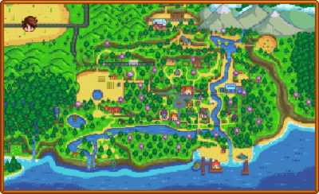

Stardew Valley é um RPG sem fim da vida no campo! Você herdou a antiga fazenda de seu avô no Vale do Orvalho. Equipado com ferramentas de segunda mão e algumas moedas, você irá começar sua nova vida.
Será que você consegue aprender a viver da terra e transformar esses campos absurdamente vegetados em uma casa próspera? Não vai ser fácil. Desde que Corporação Joja veio à cidade, os antigos modos de vida quase desapareceram.
O Centro Comunitário, uma vez o lugar mais visitado da cidade, agora está em ruínas. Mas o vale parece cheio de oportunidades. Com um pouco de dedicação, você pode ser a pessoa que restaurará a grandeza do Vale do Orvalho!
O mundo
Em Stardew Valley, o mundo se desdobra em uma tapeçaria de paisagens distintas, cada uma com sua própria essência e encantos. Entre elas, destacam-se a Vila Pelicanos, o Deserto e a Ilha Gengibre, destinos que convidam os jogadores a explorarem e descobrirem seus segredos.
Vila Pelicanos
Pelicanos é a primeira localidade para onde o jogador se dirige no início do jogo em stardew valley. Vila pelicanos é o centro da vida dos moradores, onde trabalham e socializam. Lewis é o prefeito há muitos anos e nunca teve concorrência para o cargo. a entrada noroeste da cidade conecta-se ao ponto de ônibus e à fazenda. já a passagem do sudoeste leva à Floresta Cinzaseiva, onde estão localizados o rancho da Marnie, a cabana da Leah e a torre do Mago. ao sul da cidade está a praia, enquanto o norte se conecta à montanha, onde ficam a carpintaria da Robin, as minas, a guilda dos aventureiros, a ferrovia e a pedreira.
Moradores(casáveis) da Vila Pelicanos
Nome
Imagem
Presentes amados
Presentes odiados
Alex
Café da manhã completo
Quartzo
Elliot
Pena de pato
Quartzo
Harvey
Café
Café de jardim
Sam
Pizza
Maionese
Sebastian
Sashimi
Café da manhã completo
Shane
Enroladinhos de pimenta
Picles
Abigail
Ametista
Azevinho
Emily
Tecido
Sashimi
Haley
Coco
Fragmento prismático
Leah
Bolinho de papoula
Pizza
Maru
Conjunto de pilhas
Mel
Penny
Diamante
Cerveja
O Deserto

O Deserto Calico está localizado muito ao noroeste da Vila Pelicanos. Não é acessível até que o ônibus no Ponto de Ônibus tenha sido reparado completando os Conjuntos do cofre no Centro Comunitário ou comprando o Reparo do Ônibus por 40 000 ouros do Formulário de Melhorias Comunitárias Joja. Uma vez reparado, Pam retornará ao trabalho como a motorista do ônibus. Um bilhete para transportar o ônibus para o deserto custa 500 ouros cada vez, embora a viagem de volta seja gratuita. Os bilhetes só podem ser comprados quando Pam estiver presente no ônibus (10:10 - 17:00).
Moradores do Deserto
Nome
Imagem
Presentes amados
Presentes odiados
Sandy
Narciso
Azevinho
Segurança
sr. QI
Ilha Gengibre
Ilha Gengibre é uma ilha no arquipélago das Ilhas Samambaia que pode ser acessada após consertar o barco do Willy que tem nos fundos da Peixaria e comprar a passagem, que por sua vez é acessado após completar o Centro Comunitário ou o Formulário de Melhorias Comunitárias Joja. A Ilha Gengibre é a única ilha disponível para se visitar no arquipélago, embora outras ilhas possam ser vistas de barco no caminho para lá.